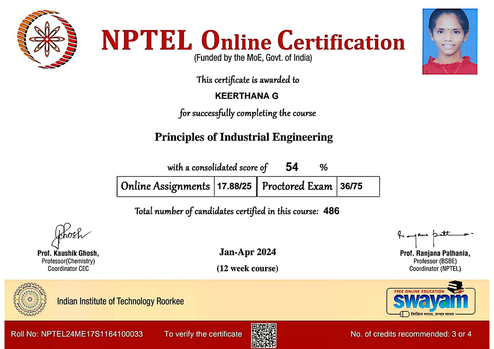

Certificates



I'm Keerthana G, an ECE student with a minor in Mechanical Engineering, passionate about IoT, embedded systems, and biomedical devices. I’ve developed projects such as a Mouth Cancer Detection System using Raspberry Pi and a Posture Monitoring Device. Completed an internship that gave me hands-on experience in system design and tools. Skilled in Python, Verilog, Proteus, and hardware integration.I’m driven to explore emerging technologies and create innovations that make a real difference.
Developed a portable low cost mouth cancer detection system using Raspberry Pi 4, camera module, and a deep learning based image classification model. The system captures real-time oral images, analyzes them with an AI model and displays results for early stage detection offering an accessible solution for home based and rural healthcare.
Designed an IoT-enabled system to monitor and correct human posture using sensor technology and microcontroller integration. The system provides real time feedback to users upon detecting incorrect posture, helping prevent spinal issues and promoting ergonomic wellness
Designed and implemented a motion-detection security system using a PIR sensor and GSM module. The systemsends real time SMS alerts to a mobile device when motion is detected, offering a cost-effective solution for remote surveillance and security monitoring.
Simulated Frequency Modulation using Python. Generated carrier and message signals, visualized the modulated waveform and calculated maximum and minimum frequency deviation using NumPy and Matplotlib.
Completed a VLSI internship at 1Stop (IIT Bhubaneswar) in online mode, where I designed and simulated digital circuits using LTSpice. Developed a sequence detector and implemented a 16-bit RISC processor using Verilog HDL. The internship provided hands-on experience with schematic design, waveform analysis, and a solid foundation in VLSI design flow.
Completed a two week in-plant training at BPL Medical Technologies ,Palakkad where I gained exposure to the working principles of biomedical devices and healthcare technology. The training involved hands-on learning in the troubleshooting, maintenance, and operational aspects of medical equipment. It also provided insights into the integration of electronics with biomedical systems, enhancing my understanding of practical applications in the medical electronics domain.